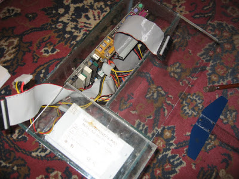
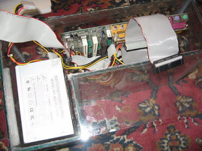
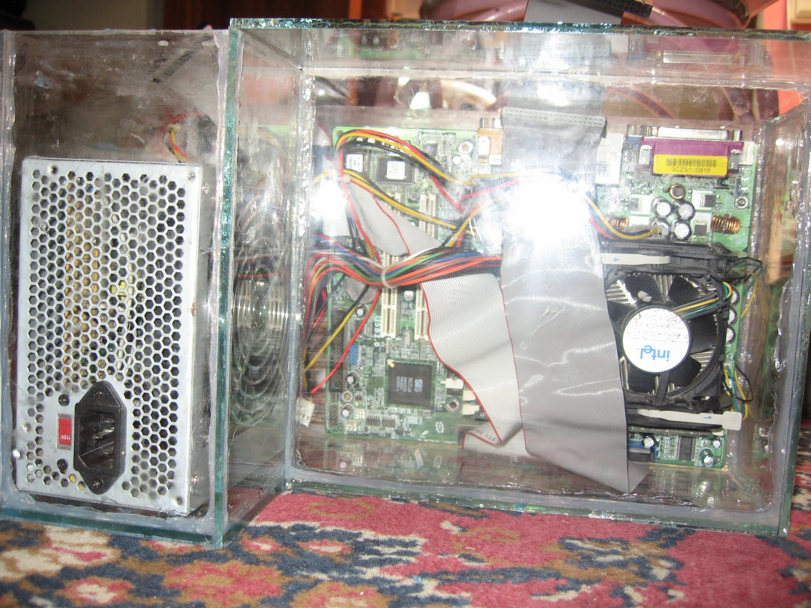

Hoy traigo la continuación de mi proyecto pecera con un par de cosas:
Primeramente, he llegado a la conclusión de que este MOD es más estético que funcional, puesto que la refrigeración propiamente dicha no resulta más eficiente que la tradicional, aún con el movimiento de el aceite producido por los ventiladores.
Sin embargo, si encuentro la manera de a su vez refrigerar el aceite, SI que seria mucho más eficiente que el flujo de aire tradicional, pero mientras busco la manera presento lo que tengo hasta ahora:

Como ven ya he diseñado y construido la pecera, este primer intento estaba bien, pero necesitaba 5 Galones de aceite! Y dejaba mucho espacio (volumen) infructuoso, así que para el segundo diseño medí los dos componentes que se sumergirán (fuente y placa madre) para dejar apenas la holgura necesaria para los cables al interior, de esta forma llegué a necesitar solamente 2 galones que ya es algo más razonable, teniendo que cada galón cuesta unos $20 USD.

Aquellos vidrios que pueden ver asentados sobre la pecera, sirven de soporte para el HDD, los lectores ópticos, y puertos/switches que no pueden ser sumergidos por obvias razones, si alguien no las ve tan obvias, se las digo a breve cuento:
No podemos sumergir el HDD por que este se inundaría con aceite, y los discos no podría girar correctamente ni las cabezas desplazarse correctamente, el HDD moriría!
No podemos sumergir los lectores ópticos por que el aceite interferiría en la lectura de los CD/DVD’s, además de que no seria nada agradable meter la mano en el aceite, y sacar un CD todo aceitoso!
No podemos sumergir los switches y los puertos delanteros (Sobre todo USB) por la misma razón que lo anterior, no desearíamos meter nuestro pendrive en aceite, y al terminar de usarlo guardarlo así en nuestro bolsillo.
Pues bien, ya con esto aclarado y la pecera construida es momento de premeditar la distribución de los componentes y las conexiones dentro de ella, hice una prueba:
  
Por el largo de los cables, sobre todo de los IDE, el HDD irá sobre el vidrio que a su vez esta sobre la fuente y los lectores ópticos irán sobre la placa, pero hacia el frente, sin cubrir los puertos de la placa los cuales desde luego están hacia arriba para facilitar la conexión.
Ya con esto lo que me falta es pensar como colocar un ventilador extra para que el aceite se mueva más y disipe mejor el calor, también quiero sumergir los LEDs de mi MOD anterior para no desperdiciarlos. Además buscaré entre estos días el aceite más barato y el más fino (poco espeso) que pueda encontrar, con eso estaré listo para terminar el proyecto y publicarlo en un próximo post.